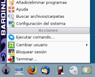

Instalación de paquetes de software para titulaciones específicas
Software de utilidad para prácticas, investigación, etc.
Existe software para áreas específicas de conocimiento: Matemáticas, Física, Biología... Bardinux incluye recopilaciones de software útiles para muchas de estas necesidades.
Instalar estos paquetes es muy sencillo. Sólo necesitas abrir el instalador que se encuentra en el menú de aplicaciones, eligiendo la opción 'Añadir/Eliminar programas':

El instalador tiene este aspecto:

Los paquetes específicos de Bardinux se encuentran en la sección 'Others'. Sólo has de seleccionar el paquete que deseas instalar y pulsar el botón 'Aplicar cambios'. Clic para ampliar.
{kind=link}
Tareas relacionadas
Instalación de Paquetes de Software específico universitario
Como instalar las recopilaciones de paquetes especializados para Biología, Química, Física, Informática etc.
Solicitar paquetes o aportar sugerencias
Si quieres puedes sugerirnos mejoras o decirnos qué software echas en falta, para incluirlo en próximas actualizaciones de Bardinux.
Puedes dejar un mensaje en los foros de soporte de Bardinux y se tendrá en cuenta para el futuro.